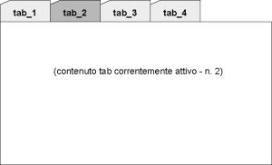

Il TabSetPanel è un pannello utilizzato realizzare strutture organizzate a tab. Prevede due sezioni visibili:
| cod. | nome | descrizione |
|---|---|---|
| apparenza grafica | ||
| PTAB002 | visualzzazione tab attivo | Visualizza uno solo dei pannelli "inclusi" |
| PTAB006 | linguette tab | Nella parte superiore del tabset panel è presente una sezione di selezione manuale del tab attivo, organizzata graficamente come un insieme di "linguette" (tipo quelle di uno schedario) |
| dinamica di interazione | ||
| PTAB003 | tab attivo persistente | Lo stato del pannello (ovvero l'informazione circa il tab correntemente "attivo") è mantenuta durante la sessione utente |
| PTAB004 | attivazione tab comandabile | E' possibile comandare da logica applicativa l'attivazione di uno dei tab contenuti nel TabSet |
| PTAB005 | attivazione manuale tab | E' possibile comandare l'attivazione del singolo tab mediante la pressione della "linguetta" corrispondente al tab desiderato |
| PTAB007 | logica su selezione tab | E' possibile associare all'evento di selezione di un tab l'esecuzione di una logica applicativa |
| PTAB008 | passaggio a tab condizionato | A fronte dell'esito della logica associata alla selezione di un tab è possibile eseguire o meno l'effettivo passaggio al tab selezionato |
| PTAB009 | active tab awareness | L'informazione di quale sia il tab correntemente selezionato è a disposizione della logica applicativa |
| struttura | ||
| PTAB001 | struttura singolo tab | La struttura di ciascun tab è determinata da un pannello che può essere dei seguenti tipi:
|
|  |
| Esempio di tab set panel |
Nella tabella seguente è riportato il grado di implementazione delle varie caratteristiche/funzioni dell'elemento TabSetPanel nelle differenti implementazioni.
| cod | feature | guigen | |||
|---|---|---|---|---|---|
| 1.5.0 | 1.6.0 | ||||
| neutral-base | neutral-arricchita | neutral-base | neutral-arricchita | ||
| apparenza grafica | |||||
| PTAB002 | visualzzazione tab attivo |  |
|
|
|
| PTAB006 | linguette tab | |
|
|
|
| dinamica di interazione | |||||
| PTAB003 | tab attivo persistente | |
|
|
|
| PTAB004 | attivazione tab comandabile | |
|
|
|
| PTAB005 | attivazione manuale tab | |
|
|
|
| PTAB007 | logica su selezione tab | |
|
|
|
| PTAB008 | passaggio a tab condizionato | |
|
|
|
| PTAB009 | active tab awareness | |
|
|
|
| struttura | |||||
| PTAB001 | struttura singolo tab | |
|
|
|